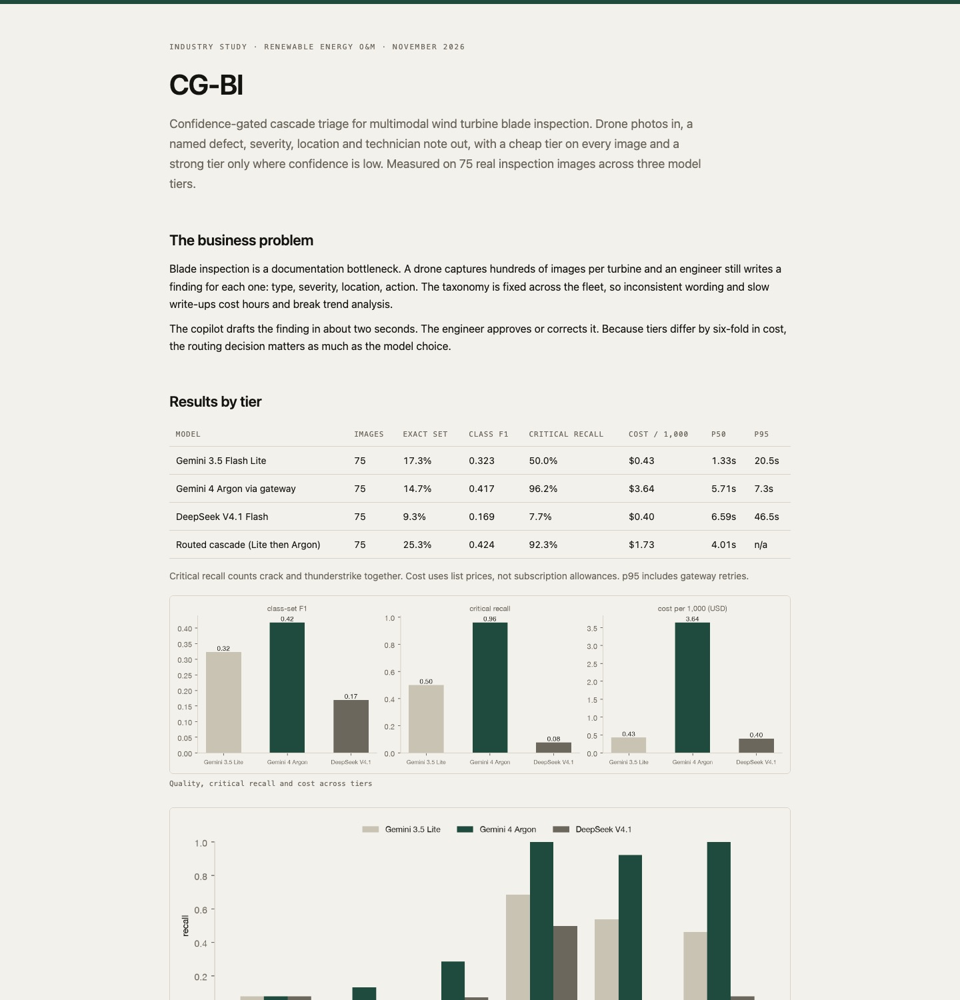
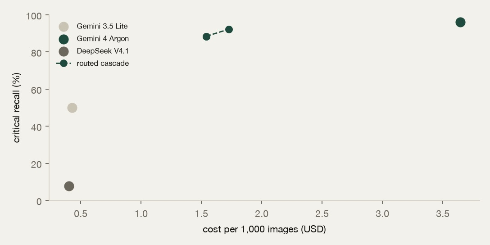
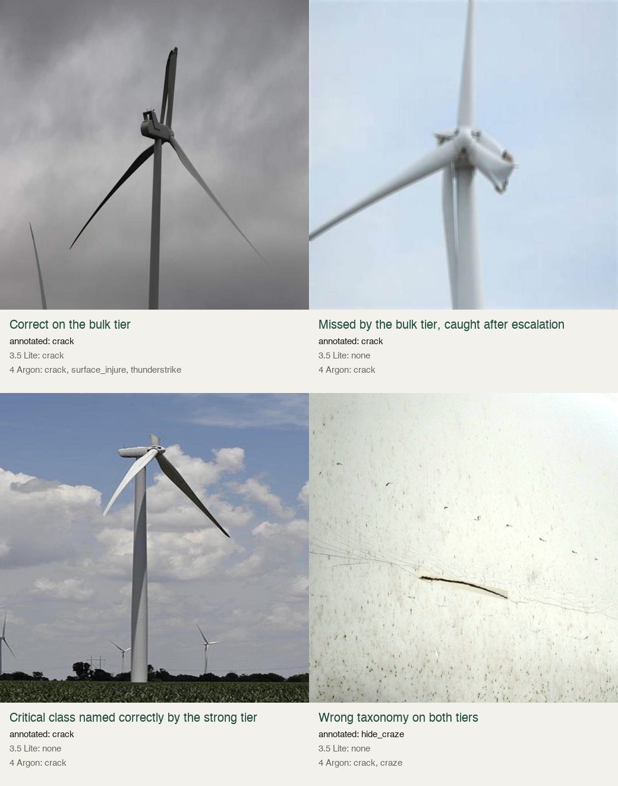

Demo, screenshots and figures
27 s demo · source, terminal, live page
aprameyacv.com/reports/cg-bi/report.html



01What it is
A drone captures hundreds of blade images per turbine, and an engineer still writes a finding for each one: defect type, severity, location, action. This measures whether a multimodal model can draft that finding, and what a two-tier routing policy buys over picking a single model.
02How it works
- 75 real drone images across a fixed six-class taxonomy, one call per image unless escalated.
- A confidence gate. A cheap multimodal model labels every image; anything below 0.9 confidence, 36% of the set, goes to a stronger model.
- Costed per thousand images, with p50 latency, so a quality win that nobody can afford shows up as one.
03What it measured
| Tier | Exact set | Class F1 | Critical recall | Cost / 1,000 |
|---|---|---|---|---|
| Cheap model alone | 17.3% | 0.323 | 50.0% | $0.43 |
| Strong model alone | 14.7% | 0.417 | 96.2% | $3.64 |
| Routed cascade | 25.3% | 0.424 | 92.3% | $1.73 |
The cascade beats both single tiers on exact match and F1, holds 92.3% critical-defect recall, and costs 47% of the strong tier alone. The strong tier is accurate but expensive; the cheap tier alone misses half the critical defects.
04What it does not claim
One seed, 75 images, and no healthy-blade class, so this is not a claim that inspection can be automated. The cascade drafts a finding for an engineer to approve or correct.